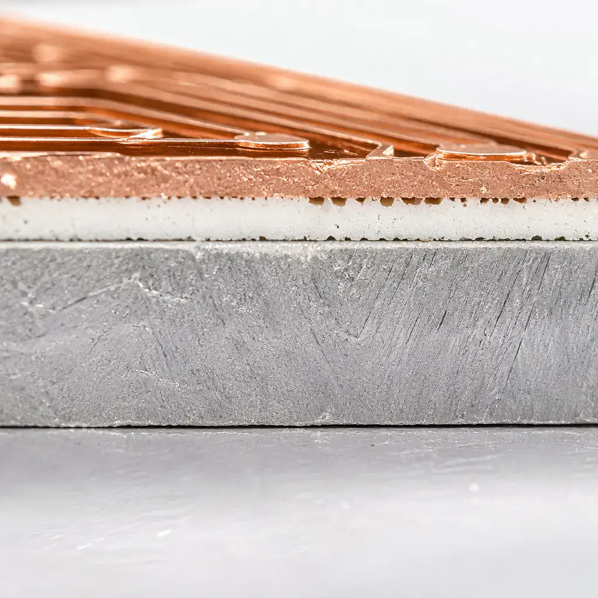
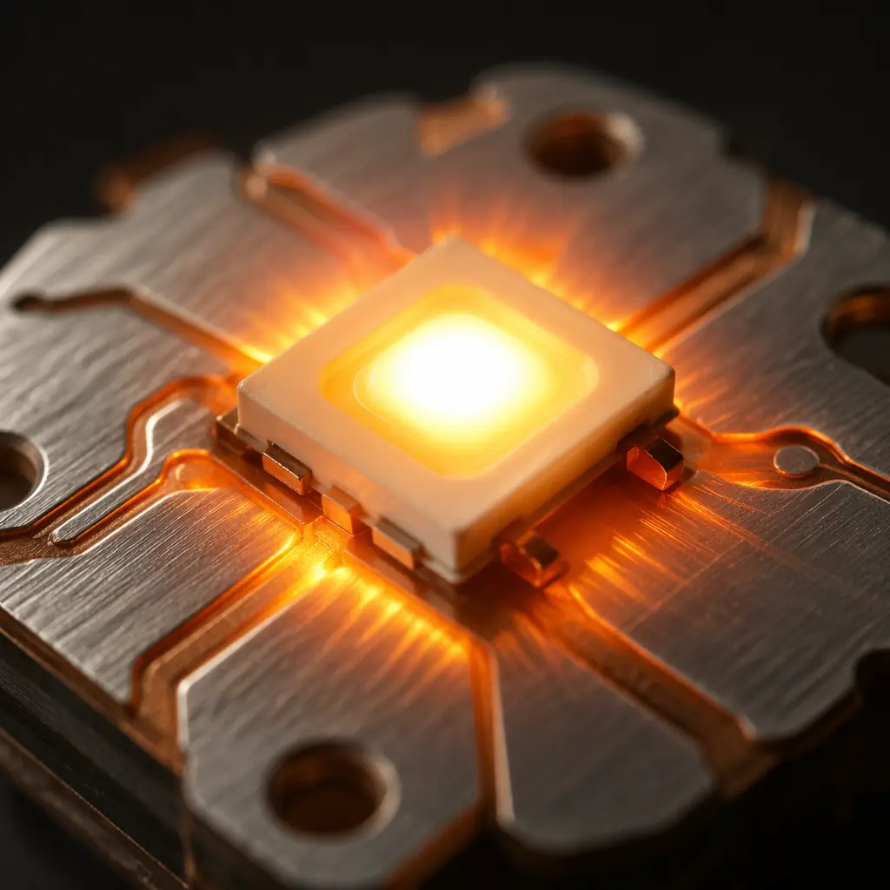
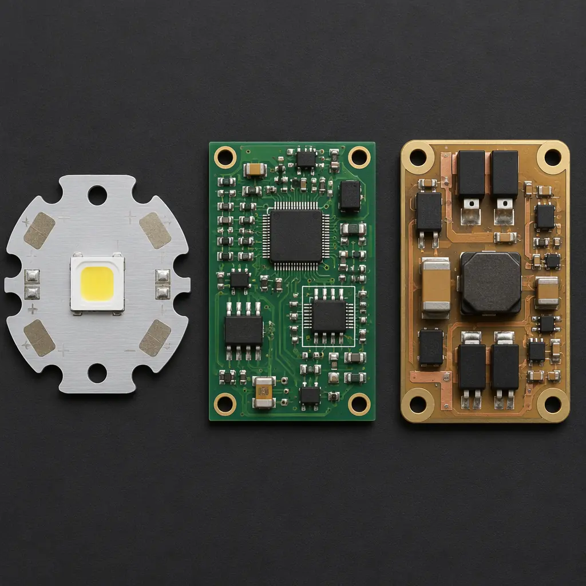

A standard FR-4 PCB dissipates heat at roughly 0.3–0.4 W/m·K through the laminate. When you bolt a 50W COB LED array to that board, the junction temperature climbs past 120°C within minutes and the LED's lumen output drops by 15–30% while its lifetime shrinks from a rated 50,000 hours to 8,000. A metal core PCB (MCPCB) with aluminum substrate and a 2.2 W/m·K dielectric — the most basic MCPCB configuration — keeps that same LED junction at 85°C, delivering full lumen output and full lifetime. The physics is simple: replace a thermal insulator (FR-4, 0.3 W/m·K) with a thermal conductor (aluminum, 150–200 W/m·K) and put the thinnest possible dielectric layer between the copper circuit and the metal base.
This guide breaks down MCPCB material selection, dielectric options, thermal design tradeoffs, surface finish compatibility, and cost optimization — with real thermal conductivity benchmarks and production data from a facility that manufactures aluminum, copper-core, and ceramic-filled PCBs alongside standard FR-4 and high-frequency laminates.
Quick decision matrix: If your component dissipates <3W, use FR-4 with thermal vias (cheapest). If 3–15W, use single-layer aluminum MCPCB (sweet spot). If 15–50W, use copper-core MCPCB or aluminum with high-performance dielectric. If >50W, use heavy copper (4–6oz) on aluminum core or consider direct-bond copper (DBC) ceramic substrate. The cost jumps at each threshold: FR-4 ≈ $1–2/board, aluminum MCPCB ≈ $3–8, copper-core ≈ $8–18, DBC ceramic ≈ $25–60.

MCPCB Layer Structure — What's Between Your Copper and the Metal
A metal core PCB has three layers, not the two that most diagrams show:
- Circuit layer: Copper foil, typically 1oz (35μm) for LED and general power applications, 2–4oz (70–140μm) for high-current power conversion or heavy copper designs. Etched and plated using the same photolithographic process as FR-4.
- Dielectric layer: The thermal interface material — a thin (75–150μm), electrically insulating but thermally conductive polymer-ceramic composite that bonds the copper circuit to the metal base. This is the most important layer in an MCPCB because it sets the thermal resistance between your component and the heatsink. Dielectric thermal conductivity ranges from 1.0 W/m·K (entry-level) to 8.0 W/m·K (premium, ceramic-filled).
- Metal base: Aluminum (1.0–3.2mm thick, 5052 or 6061 alloy, thermal conductivity 150–200 W/m·K) or copper (1.0–2.0mm, thermal conductivity 390 W/m·K). The base acts as both a heat spreader and a mechanical substrate.
The total thermal resistance from component junction to heatsink is the sum of: junction-to-case resistance (component datasheet), TIM (thermal interface material between package and PCB), copper layer (negligible — 1oz copper, 35μm, 390 W/m·K gives <0.0001 K/W), dielectric layer (the bottleneck), and metal base. The dielectric dominates: a 100μm layer with 2.2 W/m·K thermal conductivity and 100mm² contact area gives 0.45 K/W — meaning a 20W component produces a 9°C temperature drop across the dielectric alone. Double the thermal conductivity or halve the dielectric thickness, and that drop halves.
Aluminum vs. Copper Core — The Tradeoff Is Cost, Not Performance
Copper-core MCPCBs are sometimes positioned as "premium" while aluminum-core is "standard." This framing is wrong. The choice depends on two factors: total thermal load and CTE matching requirements.
| Property | Aluminum (5052/6061) | Copper |
|---|---|---|
| Thermal conductivity | 150–200 W/m·K | 390 W/m·K |
| CTE (ppm/°C) | 23–24 | 17 |
| Density | 2.7 g/cm³ | 8.9 g/cm³ |
| Typical thickness range | 0.8–3.2mm | 0.5–2.0mm |
| Cost multiplier (vs 1.6mm Al) | 1× (baseline) | 2.5–4× |
| Best application | LED lighting, power supplies ≤30W/device, general thermal | IGBT modules, power converters >30W, tight CTE matching to ceramic packages |
Copper's 2× thermal conductivity advantage over aluminum often does not translate to 2× better system performance. For a 100×100mm MCPCB with a single 15W heat source, switching from 1.6mm aluminum to 1.6mm copper reduces the temperature rise across the base from ~0.5°C to ~0.25°C — a 0.25°C improvement that costs 3× more. The metal base is rarely the bottleneck; the dielectric is. Upgrade the dielectric from 2.2 to 5.0 W/m·K and you save 6°C for the same board, at roughly a 20% cost adder rather than 300%.
Copper core is justified in three specific cases: (1) when the metal base is also a current-carrying conductor (direct-bond copper eliminates the PCB entirely); (2) when thermal loads exceed 50W per device; (3) when CTE matching between the PCB and a ceramic-packaged power semiconductor (AlN, Al₂O₃) is required — copper at 17 ppm/°C matches ceramic CTE far better than aluminum at 24 ppm/°C, reducing solder joint fatigue in thermal cycling.

Dielectric Material Selection — Bergquist, Laird, and the Generic Alternatives
The dielectric layer is the MCPCB component that procurement engineers should specify, not assume. "Thermal conductive dielectric" on a drawing without a brand name and thermal conductivity spec will get you the cheapest generic material the supplier stocks — typically 0.8–1.5 W/m·K, which performs like FR-4 with a metal backing (defeating the purpose).
| Dielectric System | Thermal Conductivity (W/m·K) | Dielectric Strength (kV) | Typical Thickness (μm) | Cost Tier |
|---|---|---|---|---|
| Generic epoxy (no-fill) | 0.8–1.5 | 2.0–3.0 | 100–150 | $ (baseline) |
| Bergquist HT-07006 | 2.2 | 6.0 | 150 | $$ |
| Laird T-lam 1KA | 3.0 | 4.5 | 100 | $$ |
| Bergquist HPL-03015 | 3.0 | 3.0 | 150 | $$ |
| Laird T-lam SS LLD | 5.0 | 2.5 | 100–150 | $$$ |
| Ceramic-filled premium | 7.0–8.0 | 1.5–2.5 | 75–100 | $$$$ |
The dielectric strength column matters for power applications: a 48V LED driver requires at least 0.5kV withstand; a 400V PFC stage needs 3.0kV+. The thinner the dielectric (better thermal performance), the lower the withstand voltage — there is a direct tradeoff. For 400V+ applications, specify minimum 100μm dielectric thickness and 3.0kV dielectric strength, which pushes you to Bergquist HT-07006 or equivalent at minimum. Do not accept "generic" for high-voltage MCPCBs.
Single-Layer, Double-Layer, and Hybrid MCPCB — What Each Architecture Solves
MCPCBs are available in three architectures, and the cost curve between them is steep:
Single-Layer MCPCB — 80% of Applications
One copper circuit layer on top of one dielectric layer on top of the metal base. No vias (you cannot drill through a metal core with standard PCB processes). All components are surface-mount on one side. This is the standard for LED lighting, COB arrays, and simple power modules. Cost: $3–8 for a 100×100mm board at 100-unit quantity. The limitation is routing density — with only one layer and no vias, you cannot cross traces. All routing must be single-layer planar, which gets tight above ~50 components.
Double-Layer MCPCB — When You Need Routing Density
Two copper circuit layers separated by a second dielectric layer, with plated through-holes connecting them. The through-holes must be isolated from the metal base — this is done by pre-drilling the base to create clearance holes, filling them with insulating resin, then drilling smaller holes through the resin plugs (a process called "resin plug via"). Cost: 1.5–2.5× single-layer. Use when you need component placement on both sides, or when single-layer routing is physically impossible.
Hybrid MCPCB — Thermal Where You Need It, FR-4 Everywhere Else
A hybrid board embeds an aluminum or copper coin into an otherwise standard FR-4 multilayer PCB. The coin sits directly under the high-power component while the surrounding area uses standard FR-4 with normal via architecture and routing density. This is the cost-optimal solution when only one or two components on a complex digital board need thermal management. The coin is press-fit or bonded into a cavity milled in the FR-4 stackup. Cost: 1.8–3× the equivalent FR-4 board, but far cheaper than making the entire board MCPCB.

Surface Finish Compatibility — What Works on MCPCB and What Doesn't
The metal base of an MCPCB creates surface finish constraints that FR-4 designers never think about. HASL (hot air solder leveling) — the cheapest and most common FR-4 finish — is problematic on MCPCBs because the aluminum or copper base acts as a massive heat sink during the solder dip. The board surface cools faster than the solder can level, producing uneven pad surfaces with thickness variations of 25–75μm. This is unacceptable for fine-pitch LEDs (0.5mm pitch CSP LEDs are common in modern lighting) and any BGA/QFN device.
Compatible finishes for MCPCB, ranked by recommendation:
| Finish | MCPCB Compatibility | Flatness | Cost | Best For |
|---|---|---|---|---|
| ENIG (IPC-4552) | Excellent | 2–5μm variation | $$ | Fine-pitch LED, all BGA/QFN, general purpose. See ENIG vs HASL comparison. |
| OSP (Organic Solderability Preservative) | Good | <1μm variation | $ | Cost-sensitive LED boards with 1.0mm+ pitch. Limited shelf life (6 months sealed). |
| Immersion Silver | Good | 1–3μm variation | $$ | RF/microwave LED drivers, aluminum wire bonding. |
| Immersion Tin | Adequate | 2–5μm variation | $$ | Press-fit connectors on power modules. |
| HASL (leaded/lead-free) | Poor — avoid | 25–75μm variation | $ | Acceptable only for through-hole-only MCPCBs with 2.54mm+ pitch (rare). |
SMT Assembly on MCPCB — Why Your Reflow Profile Needs Adjustment
The metal base that makes MCPCBs thermally effective also makes them thermally difficult to assemble. During reflow soldering, the aluminum or copper core absorbs heat from the oven, delaying the time it takes for the board surface to reach the solder melting temperature. A standard lead-free reflow profile with 60–90 seconds above 217°C on FR-4 becomes 120–150 seconds on a 1.6mm aluminum-core MCPCB — enough to damage temperature-sensitive LEDs and plastic-packaged ICs.
Three assembly adjustments for MCPCB success:
Extend preheat soak, not peak temperature
Instead of ramping to peak faster (which overheats the board surface while the core is still cold), extend the 150–180°C preheat soak by 30–60 seconds. This lets the metal core reach temperature equilibrium with the surface before the reflow zone. Peak temperature remains the same (235–245°C for SAC305 lead-free); only the soak duration changes.
Verify thermocouple placement — one on the MCPCB, one on FR-4 control
When MCPCBs run on the same SMT assembly line as FR-4 boards, profile the MCPCB separately with a thermocouple attached directly to the metal core edge and another on the component pad surface. The core-to-surface delta should be <8°C at peak; if it's higher, extend the soak further. Do not trust the FR-4 profile for MCPCB.
Reduce cooling rate — no forced-air cooling on MCPCB
Forced-air cooling in the reflow oven exit zone can cool the metal core unevenly (edges faster than center), creating thermal-mechanical stress at the dielectric-copper interface. Let MCPCBs cool naturally to below 100°C before handling. This adds 45–60 seconds to cycle time but prevents latent dielectric delamination that field thermal cycling will expose.
LED-Specific MCPCB Design — Lumen Maintenance and Thermal Budgets
LED applications dominate MCPCB volume (estimated 60–70% of all MCPCB production), and the procurement economics are different from power electronics. LED boards are cost-sensitive ($2–6/board at volume), reliability-sensitive (warrantied for 25,000–50,000 hours), and thermally predictable (steady-state dissipation, not pulsed). The key procurement insight: the cost of upgrading from 1.5 W/m·K dielectric to 3.0 W/m·K is roughly $0.30–0.80 per board, but it extends LED lifetime by 15,000–25,000 hours — reducing warranty return exposure by roughly $3–6 per fixture. The dielectric upgrade pays for itself 5–10× over in warranty cost avoidance.
For LED MCPCBs, specify these minimum parameters:
- Dielectric thermal conductivity: ≥2.2 W/m·K (Bergquist HT-07006 equivalent)
- Dielectric thickness: ≤150μm (thinner = lower thermal resistance, but check dielectric strength for your operating voltage)
- Aluminum base thickness: 1.6mm minimum (provides adequate heat spreading; 1.0mm is too flexible and causes solder joint stress on large boards)
- Surface finish: ENIG for CSP/small-footprint LEDs, OSP acceptable for 2835/3030/5050 packages with ≥1.5mm pad pitch
- White solder mask: standard for LED to maximize light reflectance (typical LED solder mask reflectance: 85–90% at 450–700nm). Specify "LED white" not "standard white" — the TiO₂ loading differs.
Cost Optimization — Where MCPCB Money Goes and How to Reduce It
MCPCB cost breaks down differently than FR-4. On a standard FR-4 4-layer board, the laminate is ~8% of board cost and drilling/plating is ~25%. On an MCPCB, the metal base + dielectric is 35–50% of board cost and the single-layer etching is only ~10%. The cost levers are different:
| Cost Driver | FR-4 Impact | MCPCB Impact | Optimization |
|---|---|---|---|
| Board area | Moderate (raw material) | High — metal base cost scales with area | Panelize tightly; no decorative borders. See PCB cost optimization guide. |
| Dielectric grade | N/A | Very high — $0.5→$1→$3→$8 W/m·K steps | Spec the minimum thermal conductivity that meets your thermal budget; don't over-spec "premium" dielectric. |
| Metal base thickness | N/A | Moderate — 1.0→1.6→2.0→3.2mm | 1.6mm is the volume sweet spot. 3.2mm doubles metal cost with diminishing thermal returns. |
| Copper weight | Moderate | Low — only 1 layer | 1oz is sufficient for most LED; 2oz for >5A trace current. |
| Surface finish | Low | Moderate — ENIG at $3–6/ft² | OSP for cost-sensitive LED; ENIG only when pad pitch requires it. |
| V-scoring/routing | Low | Low — single-layer cuts easily | Aluminum routes faster than FR-4. Panel utilization is the bigger lever. |
The single biggest MCPCB cost mistake: specifying a copper-core board when aluminum with a one-tier-higher dielectric would deliver the same thermal performance at half the cost. Always run the numbers before defaulting to copper.
DFM Rules for MCPCB — The Five Most Expensive Mistakes
Metal core PCBs have different DFM rules than FR-4, and getting them wrong produces scrap, not reworkable defects. Once the dielectric is laminated to the metal base, there is no rework — a short circuit or delamination means the entire board is scrap, because you cannot separate the layers without destroying the dielectric.
Insufficient copper-to-edge clearance on the metal base
The exposed aluminum/copper edge of an MCPCB is electrically conductive. If a copper trace runs within 0.5mm of the board edge, and the edge is not insulated (most MCPCBs are not edge-plated), there is a short-circuit path through the metal base. Minimum copper-to-edge clearance: 0.8mm for aluminum, 1.2mm for copper-core. This is larger than the 0.3–0.5mm standard for FR-4. Refer to DFM guidelines for detailed clearance rules.
Vias through the metal base — impossible on standard MCPCB
Standard single-layer MCPCBs have no vias. Period. You cannot drill through a solid aluminum plate with a PCB drill. If your design requires vias, you need either a double-layer MCPCB (with resin-plugged base clearances) or a hybrid FR-4/MCPCB approach. Designs that place vias on an MCPCB layer will be rejected by the manufacturer.
Ignoring CTE mismatch between the dielectric and the metal base
The dielectric layer expands at 30–60 ppm/°C while the aluminum base expands at 23 ppm/°C. During reflow soldering (ΔT ≈ 220°C from room temperature), a 100mm board develops ~0.3–0.5mm of differential expansion between layers. If the dielectric adhesion is marginal, this stress delaminates the copper from the dielectric — typically at the edges and under large copper pours. Mitigation: use cross-hatched copper pours (not solid) on areas >500mm², and keep individual copper features to <25mm in the longest dimension.
Specifying HASL surface finish — see above
HASL on MCPCB produces uneven pad surfaces. Skip it entirely. The cost savings (~$0.50–1.00/board) are not worth the assembly yield loss and field reliability risk.
No thermal via design under power components (hybrid boards)
On hybrid FR-4/MCPCB boards, the thermal path from a power component on the FR-4 section to the embedded metal coin goes through thermal vias. Designers sometimes omit these, assuming the coin handles thermal management — but the coin is only effective if there is a low-resistance path to it. Thermal via count guideline: minimum 9 vias (3×3 grid) for each watt of dissipation, each via 0.3mm diameter, plated to 25μm minimum. See thermal testing methods for validation approaches.